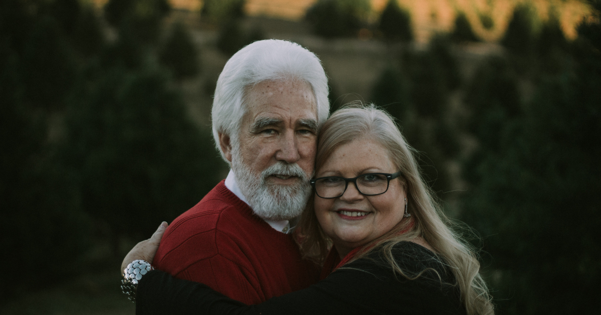

ဘိုးဘိုး ဘွားဘွားတို့အတွက် အိမ်ခန်းပြင်ဆင်ခြင်း

မြန်မာနိုင်ငံ အပါအဝင် ကမ္ဘာတစ်လွှားမှာ သက်ကြီးရွယ်အိုတွေက များပြားလာနေပါတယ်။ နိုင်ငံတကာမှာတော့ အသက်ကြီးသူတွေအတွက် သူနာပြုနည်းလမ်းတွေ၊ အထောက်အကူပြုပစ္စည်းတွေနဲ့ ပြုစုစောင့်ရှောက်နိုင်ပေမဲ့ မြန်မာနိုင်ငံရဲ့ လက်ရှိအခြေအနေအရ ဒီလိုမျိုး ဂရုစို်က်မှုတွေကို လွယ်လင့်တကူ ရဖို့က ခက်ခဲပါတယ်။ အသက်ကြီးရင့်သူတွေအတွက် အနေအထိုင်၊ အသွားအလာ၊ အစားသောက် စတာတွေ အားလုံးဟာ အရေးကြီးပါတယ်။ ဒါကြောင့် သူတို့ သွားလာလှုပ်ရှားလေ့ရှိတဲ့ အိမ်တွင်း အခန်းတွေရဲ့ အနေအထားတွေကလည်း အရေးကြီးပါတယ်။ ဒါမှသာ မလိုလားအပ်တဲ့ ကျန်းမာရေးပြသနာတွေ မဖြစ်လာအောင်မှာပါ။
ဒါ့ကြောင့် သက်ကြီးရွယ်အို ဘိုးဘိုးဘွားဘွားတို့ အန္တရာယ် ကင်းကင်း နေထိုင်နိုင်ဖို့ ကိုယ် ကိုယ်တိုင်ရဲ့ အမြင်ထက် နိုင်ငံတကာမှ ဆယ်စုနှစ်နဲ့ချီပြီး အိမ်တွင်းအလှပြင်လုပ်ငန်းတွေကို လုပ်ကိုင်နေတဲ့ ပညာရှင်တွေရဲ့အမြင်တွေကို ဘာသာပြန်ဖော်ပြပေးလိုက်ပါတယ်။
ဘာတွေ ရှောင်ရှားရမလဲ
ပစ္စည်းတွေကို အမြင့်မှာ မထားပါနဲ့
အသက်အရွယ် ကြီးရင့့််သူတွေအတွက် အမြဲတမ်းလိုလ်ို သုံးဖြစ်တဲ့ပစ္စည်းတွေကို အမြင့်မှာ ထားထားခြင်းကို ရှောင်ကြဉ်သင့်ပါတယ်။ ဖြစ်နိုင်ရင်တော့ ခါးအမြင့်သာသာလောက်မှာပဲ ပစ္စည်းတွေ ထားပါ။ ပေါင်ရင်းအောက်နားအမြင့်လောက် ဆိုရင်တော့ သူတို့တွေအတွက် ကုန်းကောက်ရတာ ဝန်လေးနေပါလိမ့်မယ်။
လှေကားမှာ မီးအလင်းရောင် ထားပေးပါ
ဒီနိုင်ငံမှာတော့ အိမ်ထဲမှာ လှေကားတွေ သုံးတာ ရှားပေမဲ့ လှေကားကွေ့တွေ၊ လှေကားထစ်တွေမှာ လုံလောက်တဲ့ မီးအလင်းရောင်တွေ ထားပေးတာ အသက်ကြီးရင့်သူတွေသာမက မျက်စိအမြင် ဝေ၀ါးနေသူတွေအတွက် အတော်ကို အထောက်အကူပြုစေမှာပါ။
လက်ကိုင်တန်းတွေ အ
အသက်ကြီးသူတွေအတွက် လှေကားထစ်တွေ တက်တဲ့နေရာမှာ လှေကားလက်ရန်းအပြင် တခြားဘက်လက်က ကိုင်စရာတစ်ခုခု ရှိရင် ပိုမြဲပါတယ်။ မူရင်းဆောင်းပါးမှာတော့ လက်ကိုင်ခြင်းတောင်းလေးတွေကို သုံးဖို့ အကြံပေးထားပါတယ်။
တစ်နေရာထဲ စုထားပါ
အရေးကြီးတဲ့ စာရွက်စာတမ်းတွေ၊ စာချုပ်အထောက်အထားတွေကို လုံခြုံပြီး လက်လှမ်းလွယ်တဲ့ တစ်နေရာ ထဲမှာ စုထားပါ။ ဒီအကျင့်က အသက်ကြီးရင့်သူတွေသာမက အရေးပေါ်အခြေအနေတွေ ဥပမာ မီးလောင်မှု ဖြစ်စဉ်တွေ မှာပါ အရေးကြီးတဲ့စာရွက်စာတမ်းတွေ ကို မဆုံးရှုံးရမှာပါ။
အိမ်တွင်း အတွင်းပစ္စည်းတွေ အဖိုးထိုက်တန်တဲ့အရာတွေကို လုံခြုံစိတ်ချရတဲ့ ဥပမာ မီးခံ သေတ္တာမှာ စုပြီး ထည့်ထားပါ။ ( ဒီအပိုင်းနဲ့ ပတ်သက်လို့ ပစ္စည်းတွေ အားလုံးကို တစ်နေရာထဲမှာ စုထားတာနဲ့ အနည်းငယ်စီ ခွဲထားတဲ့ အယူအဆ နှစ်ခုရှိပါတယ်။ မိမိစိတ်ကြိုက် ယူသုံးနိုင်ပါတယ်။)
မီတာဘေလ်တွေ၊ ရေခွန်ဆောင်ထားတာတွေ အားလုံးကို ဖိုင်တွဲတစ်တွဲ သီးသန့်ထားပြီး လအပိုင်းအခြားလိုက် စီထားပါ။ ရုတ်တရက်ကြည့်ရင် အရေးမပါဘူးလို့ ထင်ရနိုင်ပေမဲ့ အသက်ကြီးရင့်တဲ့ အဘိုးအဘွားတွေအတွက်တော့ အထောက်အကူဖြစ်သေချာနိုင်မှာပါ ။
ဆေးတွေကို စာရင်း လုပ်ထားပါ
သောက်ဆေး စားဆေးတွေကို စာရင်းဆွဲပေးပါ။ ဖြစ်နိုင်ရင်တော့ ဘယ်နေ့ ဘယ်အချိန်မှာ ဘာဆေးသောက်ရမယ် ဆိုတာကို ဆေးဘူးလေးတွေနဲ့ တကန့်စီ ထားပြီး မြင်သာတဲ့နေရာမှာ ထားပေးပါ။
ကြမ်းပြင်တွေ ခြောက်သွေ့ပါစေ
ကြမ်းပြင်တွေ စိုစွတ် ချောမွေ့နေတာဟာ အဘိုးအဘွားတွေသာမက လူငယ်တွေအတွက်ပါ အန္တရာယ်ရှိစေနိုင်ပါတယ်။ ကြွေပြားတွေ ခင်းထားတယ်ဆိုရင်တော့ အိမ်တွင်းစီးတဲ့ ဖိနပ်တွေမှာ ပွတ်တိုက်အားများစေတဲ့ ဖိနပ်တွေကို ရွေးသုံးသင့်ပါတယ်။ အထူးသဖြင့် ကြမ်းတိုက်ပြဖိးရင် ခြောက်အောင်သုတ်ဖို့ ကြမ်း မခြောက်သေးခင် လမ်းလျှောက်တာ သတိထားဖို့ လိုအပ်ပါတယ်။
အဘိုးအဘွားတွေ ကိုယ်တိုင်ကလည်း ကိုယ်ဟာ လူငယ် မဟုတ်တော့ဘူးဆိုတာ သတိထားသင့်ပါတယ်။ တစ်ခါတလေ ကိုယ်ကိုယ်တိုင် ပစ္စည်းတွေ ထယူလိုက်တာတွေ ထက်စာရင် ဘေးကလူငယ်တွေကို အကူအညီတောင်းလိုက်တာက ပိုသင့်တော်စေမဲ့အပြင် မလိုလားအပ်တဲ့ ထိခို်က်ဒဏ်ရာတွေကနေ ကာကွယ်ပေးစေမှာပါ။
ဒါတွေကတော့ အဘိုးအဘွားတွေ ရှိတဲ့ အိမ်မှာ ပစ္စည်းတွေကို ဘယ်လိုထားရမလဲဆိုတဲ့ ဆောင်းပါးလေးပဲ ဖြစ်ပါတယ်။ ဒီထဲက ပြောထားတဲ့အတို်င်း အတိအကျကြီး လုပ်စရာမလိုပေမဲ့ အိမ်မှာ ရှိတဲ့လူကြီးတွေ အနေအထား၊ ကိုယ့် အိမ်ရဲ့ အနေအထားတွေကို နှိုင်းယှဉ်တွက်ချက်ပြီး အန္တရာယ်ကင်းတဲ့ မိသားစုဘဝတွေကို ပိုင်ဆိုင်နိုင်ပါစေလို့ ဆုမွန်ကောင်းတောင်းရင်း နိဂုံးချုပ်အပ်ပါတယ်။
အားလုံးပဲ ကျန်းမာချမ်းသာကြပါစေ။
Source-ဒေါက်တာအောင်ကျော်မြင့်